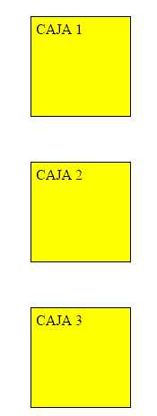
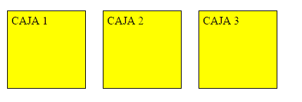

Objetivo General: Explicar informativamente las propiedades básicas de CSS y como hacer uso de ellas
Alarcon, J. (2020). ¿Qué diferencias hay entre display:block, inline e inline-block en CSS? - campusMVP.es. Retrieved 17 September 2020, from https://www.campusmvp.es/recursos/post/Que-diferencias-hay-entre-display-block-inline-e-inline-block-en-CSS.aspx
Firefox, M. (2020). display. Retrieved 17 September 2020, from https://developer.mozilla.org/es/docs/Web/CSS/display
F, A. (2020). Retrieved 17 September 2020, from https://www.youtube.com/watch?v=UvdvhMoj_Bo&ab_channel=EDteam
La propiedad CSS display especifica si un elemento es tratado como block or inline element y el diseño usado por sus hijos, como flow layout(Diseño de Flujo), grid(Cuadricula) o flex(Flexible).
Formalmente la propiedad display establece los tipos de visualización interna y externa de un elemento. La tipo externa establece la participacion de un elemento en flow layout; la tipo interna establece el layout(Diseño) de los hijos. Algunos valores de display estan totalmente definidos con sus especificaciones propias; por ejemplo el detalle de que pasa cuando display: flex es declarado y definido en la especificacion de Modelo Flexible de Caja(Flexible Box Model specification) de CSS.
Una duda típica a la hora de trabajar con HTML y CSS es tener claras las diferencias que existen entre elementos de bloque y elementos en línea, así que vamos a intentar arrojar un poco de luz sobre este tema.
Para explicarlo de manera sencilla, y simplificando, ciertas etiquetas HTML no afectan en absoluto al flujo de los demás elementos, limitándose a marcar ciertos fragmentos con una determinada semántica y dejando que el texto y otros elementos contiguos sigan fluyendo en la misma línea, colocándose a ambos lados de dicho elemento.
Por el contrario, ciertas etiquetas se renderizan en el navegador en líneas independientes, no mezcladas con el resto del texto. Ejemplos de estas etiquetas son los encabezados (h1 hasta h6), las citas en bloque (blockquote), por supuesto los párrafos (p), y quizá la más conocida de todas que es la etiqueta div usada normalmente para envolver a otros elementos. A estos elementos se les denomina elementos de bloque.
Siguiendo con el mismo ejemplo anterior, si simplemente sustituimos los span por elementos div, ahora las cajas son elementos de bloque, y se renderizarán de la siguiente manera:
block: hace que el comportamiento del elemento sea como un bloque.
inline: el elemento se renderizará en línea con otros elementos.
inline-block: el elemento tendrá un comportamiento mezcla entre los dos anteriores
El tercer valor de la lista anterior es muy interesante ya que permite obtener un comportamiento intermedio entre los otros dos. Los elementos inline-block fluyen con el texto y demás elementos como si fueran elementos en-línea y además respetan el ancho, el alto y los márgenes verticales. Son lo mejor de los dos mundos.
Enlace a la maquetación: https://balsamiq.cloud/sww8gft/p830rnf